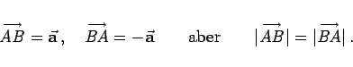

Inhalt Index DeskTop Bronstein

 Geometrie Vektoralgebra und analytische Geometrie Vektoralgebra Definition des Vektors
Geometrie Vektoralgebra und analytische Geometrie Vektoralgebra Definition des Vektors


Zwei Vektoren  und
und  gelten als gleich, wenn ihre Beträge gleich sind und ihre Richtungen übereinstimmen, d.h., wenn sie parallel und gleich orientiert sind.
gelten als gleich, wenn ihre Beträge gleich sind und ihre Richtungen übereinstimmen, d.h., wenn sie parallel und gleich orientiert sind.
Entgegengesetzt gleiche Vektoren zeichnen sich durch gleiche Beträge, aber entgegengesetzte Richtungen aus:
|  | (3.259) |
Axiale Vektoren besitzen in diesem Falle entgegengesetzt gleichen Drehsinn.